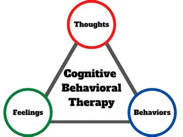
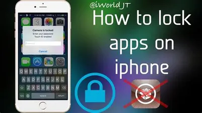

| Name | Image | Description |
|---|
| detox | | Detox isn’t just for substance abuse or diets. You can actually detox from any unhealthy behavior – including mobile gaming. By definition, detoxification is the medicinal or physiological removal of a toxic substance from your body. Detoxing from mobile games involves stopping all gameplay for a predetermined time period. Most detoxes are either 30, 60, or 90 days.
Start by choosing a timeframe. Next, take the necessary steps to eliminate mobile games from your everyday life. For most addicts this involves deleting mobile games from their phones, placing locks on the app store, or taking a break from their smartphone altogether. While this isn’t possible for most people, you can swap your smartphone for a basic phone that allows you to make calls and send text messages.
Most mobile game addicts need help to successfully complete a detox program. This is one reason online treatment and therapy programs are gaining in popularity. Video game and mobile game addicts can access the help, support, and resources they need from the comfort of their own homes. Following the detox period, some gamers are able to slowly incorporate mobile games into their lives in a healthy, moderate way while others only find success when they eliminate gaming from their lives completely. |
| CBT(Congitive Behavioral Therapy) |  | CBT, also known as cognitive behavioral therapy, is a popular method for treating behavioral addictions including those to mobile games. The main focus of CBT is to alter a person’s thinking patterns. This structured approach to addiction starts by analyzing how you think about mobile games and then helping to restructure those thoughts to promote healthier behaviors.
Therapists may start by helping an addict recognize how their ideas about mobile games are distorted and what problems they’re creating in their lives. Next, addicts are guided through a process of reevaluating these negative thoughts in light of reality. This process is designed to help addicts gain a better understanding of what motivates their behavior so they can make positive changes. |
| Mindfulness | | Another approach to treating mobile game addiction that involves controlling and changing thought patterns is mindfulness. Mindfulness is a form of meditation that helps addicts become intensely aware of what they’re feeling and sensing in a given moment. Mindfulness helps you slow down and interpret your thoughts and feelings without judgment.
Certain techniques that accompany mindfulness include guided imagery and breathing exercises. The ultimate goal is to help addicts relax both the mind and body to gain a better understanding of thoughts and feelings. Once you achieve this, you can view your mobile game addiction more objectively and make clear, informed decisions about how to replace your gaming habit with something more productive. |
| Deleting and Locking certain apps | | When it comes to overcoming mobile game addiction, willpower may not be enough. In addition to cognitive therapy and mindfulness, many mobile game addicts need to place blocks on their devices or delete their favorite mobile apps altogether. This is not a sign of weakness. Instead, it’s a matter of being honest with yourself and removing temptation.
The simplest way to stop yourself from playing your favorite mobile games is to delete them from your phone. You can also lock certain apps or place restrictions on downloads. Most smartphones prompt users to enter credit cards or other payment information to keep on file. Once this information is entered, you can make purchases in the app store with a touch of a button. While this may be convenient in some ways, it’s dangerous and far too tempting for mobile game addicts. |
| Securing Phone |
 | One way for video game addicts to support the detox process or limit gameplay is to remove or get rid of their gaming console or PC. Ditching your cell phone isn’t as easy. After all, you need it to make calls, send text messages, and maintain contact with the outside world. Because of this, mobile gamers need to take extra steps when overcoming their addiction.
Choose a secure place to keep your phone whenever possible. During work, turn down the volume (or turn it off completely) and leave it in a drawer, locker, or someplace safe where it’s not easily accessible. When you’re at home, leave your phone in your bedroom, closet, or another safe place so you can focus your attention on more important things like spending time with your family or performing tasks around the house. |